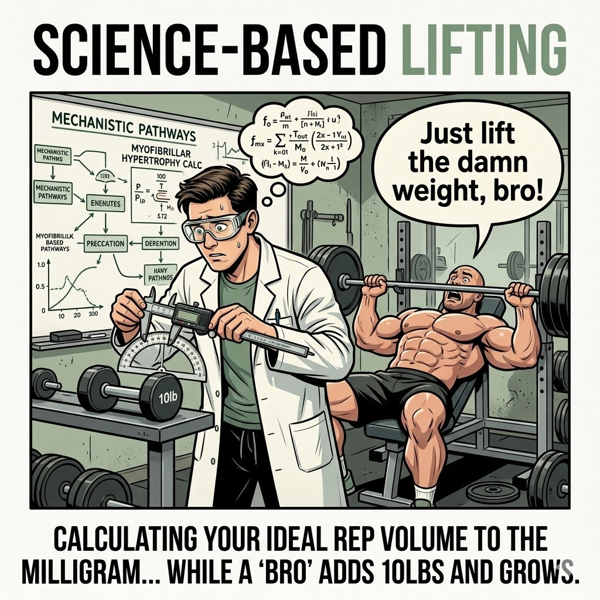

Free resource — no ads, no sponsors
The best fitness creators on the internet, sorted by what they actually teach.
There are hundreds of "science-based" lifting accounts. Most of them say the same thing. This site tells you which ones are worth your time, what they're best at, and what order to learn from them — whether you've been lifting for a week or a decade.
Take a 90-second quiz and get a personalized shortlist, or just browse.
Read this first
The fundamentals that everything else builds on.
Train each muscle twice per week with most sets within a few reps of failure. Eat enough protein (1.6 to 2.2 g/kg body weight) and prioritize sleep. Progress over months, not weeks. Consistency beats optimization. Everything else on this site is nuance on top of these basics.
This site helps you find the creators who teach useful, evidence-based gym content — and learn from them in the right order. Take the quiz for a personalized plan, or explore the learning paths and creator directory directly.
Four stages
Where are you right now?
Each stage has its own set of creators, topics, and priorities. Master one before moving to the next.
Pre-Foundations
Brand new or under 6 months. Learn basic movements, build a gym habit, get protein and sleep right.
Stage 1Foundations
6 to 18 months. Understand programming, exercise selection, nutrition fundamentals, and recovery basics.
Stage 2Intermediate Application
1.5 to 3 years. Biomechanics-driven exercise selection, periodization, and navigating contested topics.
Stage 3Advanced Nuance
3+ years. Individualized biomechanics, primary research, advanced periodization, coaching others.
Explore
More ways in.
The quiz is the fastest way to get started, but you can also browse directly.
Creator Directory
Every creator on the site with expandable profiles, social links, and what they teach.
Go deeperOpen Debates
Lengthened partials, volume ceilings, frequency — both sides with real video links.
EditorialWhat's Noise
How to tell real science from optimization theater and marketing funnels.
WatchPhysique Inspiration
Pro-level competitors who train with evidence-based methods — separated from educational content.